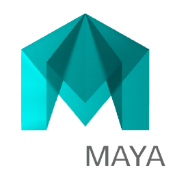

Lucas Heringer

Informações Básicas
22 anos
São Paulo – São Paulo
Rua Coronel Conrado Siqueira Campos, 133, ap 23 - Brooklin
22 anos
São Paulo – São Paulo
Rua Coronel Conrado Siqueira Campos, 133, ap 23 - Brooklin
Centro Universitário Senac Santo Amaro – Santo Amaro – Arquitetura e urbanismo (FEV 2013 – DEZ 2017)
SAGA – SCHOOL OF ARTS AND WEBDESIGN (JUN 2010 – ABR 2013)
Colégio Objetivo Unidade da Paz (FEV 2012 – DEZ 2012)
Estagiário de Arquiteto na empresa CC – Casa e Construção (OUT 2015 – JUN 2016) Elaboração de paginações, consultas e orçamentos para clientes, organização e acompanhamento de obras realizadas
Freelancer – Design Gráfico e 3D Design, computação gráfica, animação e modelagem 3D (2012 – 2016)
Adobe Illustrator – Intermediário
Adobe Photoshop – Avançado
Adobe After Effects – Intermediário
Adobe Premiere – Avançado
AutoCAD – Avançado
SketchUP - Intermediário
Maya 3D – Avançado
Lumion – Avançado
Ingles – Avançado
Espanhol – Intermediário
Formação no Pacote Adobe pela SAGA School of Arts and Webdesign (2º semestre 2010 – 1º semestre 2012)
Participação na elaboração da Maquete Oficial do Campus Senac Santo Amaro (1º semestre 2014)
Workshop Fluxos 2014 (1º semestre2014)
Formação em Modelagem e Animação 3D pela SAGA School of Arts and Webdesign (2º semestre 2012 – 1º semestre 2013)